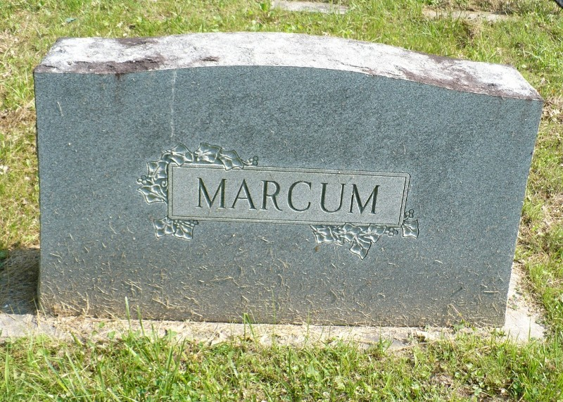

1900s–1980s · Perry County, Kentucky · Find a Grave places his burial at Englewood Cemetery in Christopher.
13 December 1986 · Death date on headstone; burial recorded at Englewood Cemetery.
Life Story
Hiram Marcum was born 30 December 1902 and died 13 December 1986, according to the dates carved on his headstone and repeated on Find a Grave. He is buried at Englewood Cemetery in Perry County, Kentucky, alongside his wife Bertha Owens Marcum. The linked memorial pages place Harold Clayton Marcum among their children, connecting this couple to Rick’s Gen VI Marcum line. Those online family links are derivative; the father assignment remains a supported working relationship pending original records.
Family links shown here are attributed to the named records; no other relative profiles were created for this Gen VI couple.
His mother died around 1927, when Homer was sixteen. His father later married Julia Bell Kelly, and that tied the family to the Kellys twice over: Julia's sister Sarah Hazel Kelly, a Georgia girl, became Homer's wife.
Homer and Sarah married on 6 August 1930 in Hamilton, Ohio. Six children followed through the 1930s: Eunice, Eugene, the twins Elmer and Earl, a daughter, and Homer Jr. In 1940 the family of eight lived on Ford Road in Morgan County, in the same house as five years before.
By 1950 they had moved north to Cincinnati, to 517 12th Street, and by 1953 to 519 E. 12th Street. In January 1952 the twins joined the Marines on their seventeenth birthday. Elmer served in California; Earl went to Korea and was wounded on 27 July 1953, the last day of the war; the family was told it was on Pork Chop Hill, but the Marines' last fight was at Boulder City and Hill 111. Homer lost Earl to a car crash in Kentucky in 1959.
Sarah died in Hamilton, Ohio, on 28 February 1987. Homer died in Palm Beach, Florida, on 8 March 1991, at seventy-nine, formerly of College Hill. He was buried beside Sarah at Spring Grove Cemetery in Cincinnati, under their shared stone. He left twenty-four grandchildren and thirty-eight great-grandchildren.
More of Homer's story will be added as family members share their memories.
Photo Gallery
Hiram Marcum’s dated headstone; Find a Grave photo by SWF. (30 Dec. 1902–13 Dec. 1986) source

Separate MARCUM surname marker in the same memorial photo tab; not a personal marker. source
Related family clippings pictured above are scans from the family collection. They are evidence about the Brewster household and descendants, not portraits of Homer except where the caption specifically identifies another person. An online memorial is also available: Find a Grave.
Grades: an original record says it · several records point to it · the family's own telling · a lead, not proved.
Research Notes and Open Questions
The profile is Gen VII as the working father of the named Gen VI person Harold C. Marcum. The relationship is strongly supported by the linked Find a Grave family-member lists for Hiram and Harold and by FamilySearch’s compiled family pages; no original birth/census record has yet been inspected in this review. Keep it sourced as a working assignment, not a primary-record proof.
Conflict within Find a Grave: Harold’s memorial narrative says he was son of “Harold Marcum and Bertha Owens Marcum,” while the same memorial’s linked parents name Hiram Marcum and Bertha, and Hiram’s own child list names Harold Clayton Marcum. FamilySearch’s compiled profile also identifies Hiram as Harold’s father. Do not silently reconcile the erroneous-looking narrative wording; Hiram is the working assignment because the cross-linked family lists converge.
The cemetery memorial links five siblings to Hiram: Squire, Emily, Bertha, Taylor and Green Marcum. They are included as attributed leads, not separately profiled.
No verified portrait located. The profile image is a headstone photograph, not a portrait. The two photographs in the memorial tab have both been preserved.
DNA
No DNA matches linked yet.
Family Notes
No Family Notes link has been supplied for this person.
Profile created 25 November 2026 for the Gen VII parentage research on Harold C. Marcum × Etta F. McFadden. Photo first, matching the live Homer/Virgil profile layout.